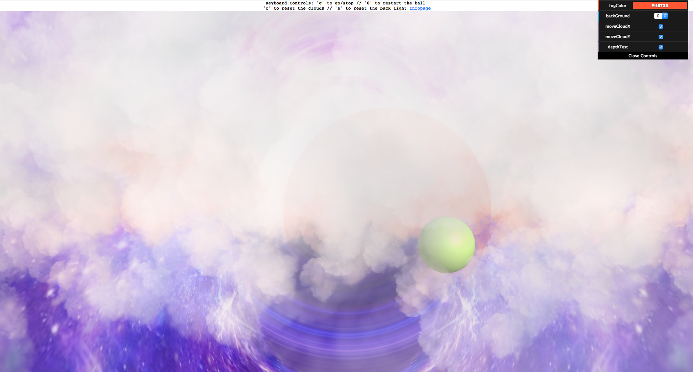
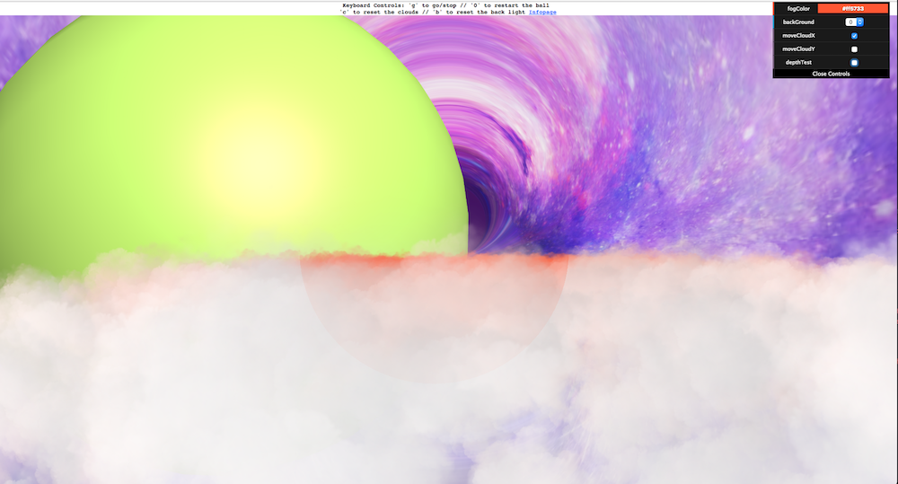
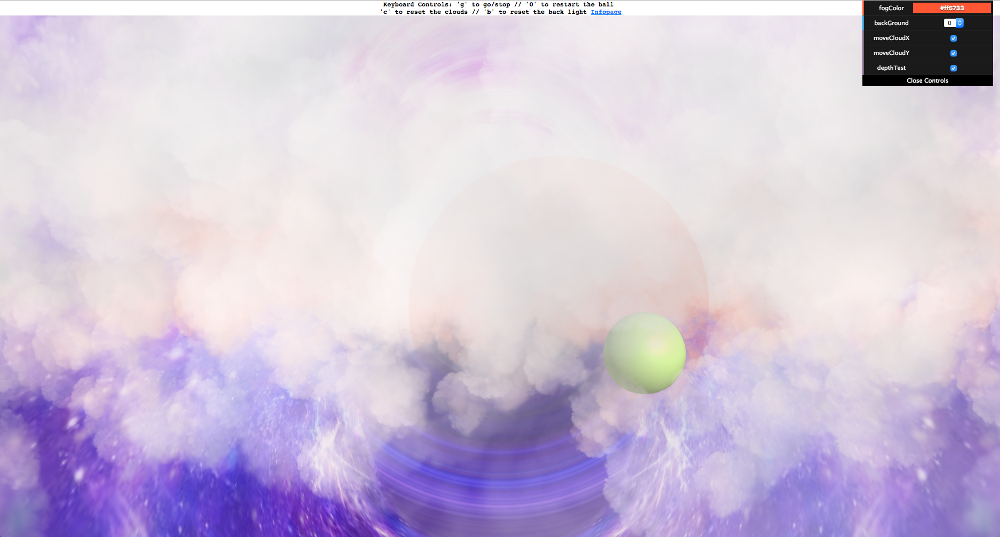
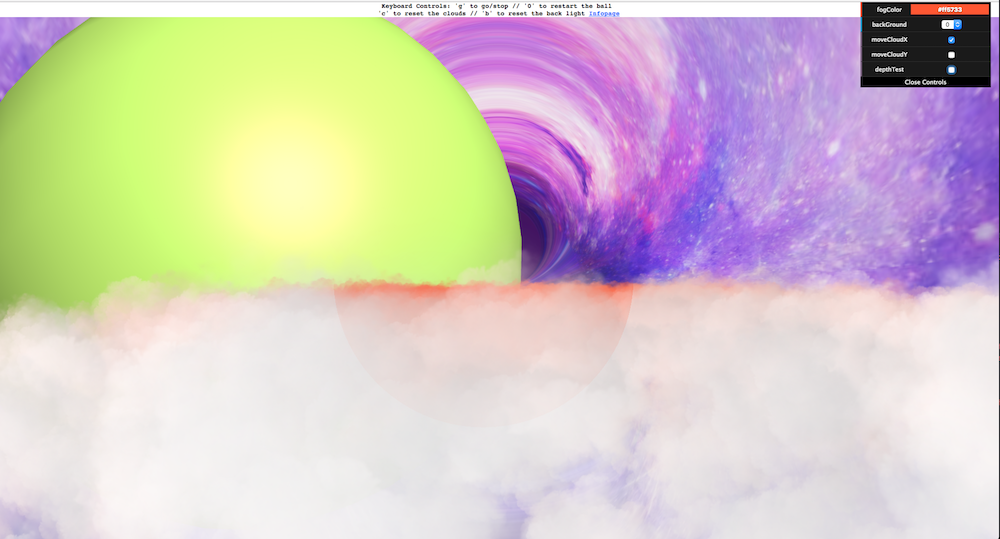

Shelley X Wang
Demo Here

Intro
This was a project to familiarize myself with some of the vast possible applications
of manipulating shaders in Three.js. There are two meshes in the scene that have custom
shader attached, the clouds and the background. There are various ways to interact with
the scene via dat.GUI, keyboard, and mouse interactions, so that the user can also
experiment with the scene.
This project also demonstrates the importance of using the depth buffer algorithm and
employing the painter's algorithm, drawing clouds from furthest to nearest. This personally
gave me a lot of grief and headaches while writing the scene, so I found it pertinent to include
a feature that addresses this. You can see the importance by turning on/off the depthTest in the
GUI while allowing a ball in the scene to fly through the clouds.
Note: The alpha version was modelled on code modified from
Farzad Khorasani.
For this iteration, the code from Khorasani was completely scrapped. The current
iteration is much more a build from the ground up referencing pieces from the
cloud scene by mrdoob.
Controls & Functionalities
dat.GUI
fogColor: Changes the color of the more distant clouds (which are colored for a realistic depth effect)
backGround: User can choose between two different shader effects on the background plane
ballSpeed: A green ball will fly at the user from a distance upon initialization; the user can choose how fast
it flies towards them
moveCloudX/Y: Changes the color of the more distant clouds (which are colored for a realistic depth effect)
depthTest: Changes the color of the more distant clouds (which are colored for a realistic depth effect)
backLightOn: Turns on/off a pulsing "light" for the background that follows the mouse and affects the background shader
cloudbackLightOn: Turns on/off a "light" for the cloud that is like the one for the background light except for the pulsing
aspect
Keyboard Controls
(also shown at top of demo for reference)
g: Start/stop the ball (note: the ballSpeed in the GUI must be greater than 0 to start)
0: (zero) Reposition the ball at its initial starting point at from the back of the clouds, especially do this
after the ball has flown past the user/camera
c: Moves all of the clouds back to their initial starting point
Mouse Controls
If the ball isn't stopped via the GUI or keyboard command, or already passed the camera, the ball will follow the location
of the mouse moving in the x and y planes towards the pointer location. If the background light and cloud light are on,
they will follow the location of the pointer directly.
Things to try & More insight
Change the background from 0 to 1 for a radiating "rainbow" effect. Also try
changing the fog color (here it was changed to blue)

Turn on moveCloudY and let the ball travel through while the depthTest is on (bonus for using
the mouse to guide the ball through the clouds)
Wait for all of the clouds closest to the camera to pass up and away. You will then
notice more "colored" clouds. Because they are further away from the camera, they become
more mixed with the fog color via the cloud fragment shader.

Try turning the depthTest off; the ball will look huge when close by but still
remain behind all of the clouds!
Turn the cloud light on and pass it over the clouds. Bonus points for doing it when
having the clouds move upwards in the Y direction (try passing it over the most transparent
cloud areas)

Coming up with a formula to make the light diffuse and blend into the background
took awhile, and written in the fragment shader. The pulsing, on the other hand, was
written in javascript to manipulate the uniforms. I thought this was a good lesson in
getting the GLSL code and javascript to communicate with each other.
Have fun
There are a lot of combinations to be tried; i.e. turning of the cloud x-movement and just letting
the clouds rise, keeping both lights on/off, etc.
Known "Bugs", Future Iterations, and Takeaways
I feel ambiguous about whether the word "bugs" should be applied to the following, as the program works currently works as intended
but definitely could be improved on the functionality side in future iterations. Therefore, this is a list of "bugs"/future things to implement.
- The background texture eventually blends into a seamless purple if left open for too long; the fragment shader code could be improved
to loop or replace the texture when that happens
- When the clouds/ball/etc. migrate off the screen, I could perhaps write something to automatically place them back at their initial
positions. Or, I could make infinite clouds appear afterwards
- Allowing the user to apply different shader materials to the ball itself
- The mouse interaction overlaps with trying to manipulate features on the GUI; I could try to have the event listener ignore any movement
inside the GUI box
- Controlling cloud speed
- & etc.
As I worked on this project, it quickly became apparent that there seemed to be an infinite amount of concepts to master
in order to get a good handle on writing shaders. This meant that even though I spent a very large time trying to learn about shaders
from the ground up, I'm sure I've only touched the tip of the iceberg. There were dozens that I came across that looked extremely
promising, but realistic time constraints would bar me from implementing for this iteration.
Most notably, in terms of shaders, the next concept I would like to implement is linking the scene lights to the custom shaders
(so we could perhaps get a shadow on the clouds from the ball bouncing). Currently, the scene lights are only manipulating the shading
on the ball (as it is of a phong material).
In this iteration, I also only focused on manipulating the fragment shaders; in the future I would like to try manipulating the vertex
shaders and creating displacements across the surfaces of the geometries (also perhaps combining it with a fragment shader manipulation
to make objects "glow").
I'd also like to try making use of various shader libraries currently written by members of the three.js community. There are other shader
concepts I'd like to try, but this list would never end. Overall however, I've learned an indordinate amount of things through this project.
Special thanks to Scott Anderson, Jos Dirksen's book, and everyone who wrote a shader tutorial/the StackOverFlow threads
Intro
This was a project to familiarize myself with some of the vast possible applications of manipulating shaders in Three.js. There are two meshes in the scene that have custom shader attached, the clouds and the background. There are various ways to interact with the scene via dat.GUI, keyboard, and mouse interactions, so that the user can also experiment with the scene.
This project also demonstrates the importance of using the depth buffer algorithm and employing the painter's algorithm, drawing clouds from furthest to nearest. This personally gave me a lot of grief and headaches while writing the scene, so I found it pertinent to include a feature that addresses this. You can see the importance by turning on/off the depthTest in the GUI while allowing a ball in the scene to fly through the clouds.
Note: The alpha version was modelled on code modified from Farzad Khorasani. For this iteration, the code from Khorasani was completely scrapped. The current iteration is much more a build from the ground up referencing pieces from the cloud scene by mrdoob.
Controls & Functionalities
dat.GUI
fogColor: Changes the color of the more distant clouds (which are colored for a realistic depth effect)
backGround: User can choose between two different shader effects on the background plane
ballSpeed: A green ball will fly at the user from a distance upon initialization; the user can choose how fast it flies towards them
moveCloudX/Y: Changes the color of the more distant clouds (which are colored for a realistic depth effect)
depthTest: Changes the color of the more distant clouds (which are colored for a realistic depth effect)
backLightOn: Turns on/off a pulsing "light" for the background that follows the mouse and affects the background shader
cloudbackLightOn: Turns on/off a "light" for the cloud that is like the one for the background light except for the pulsing aspect
Keyboard Controls
(also shown at top of demo for reference)
g: Start/stop the ball (note: the ballSpeed in the GUI must be greater than 0 to start)
0: (zero) Reposition the ball at its initial starting point at from the back of the clouds, especially do this after the ball has flown past the user/camera
c: Moves all of the clouds back to their initial starting point
Mouse Controls
If the ball isn't stopped via the GUI or keyboard command, or already passed the camera, the ball will follow the location of the mouse moving in the x and y planes towards the pointer location. If the background light and cloud light are on, they will follow the location of the pointer directly.
Things to try & More insight
Change the background from 0 to 1 for a radiating "rainbow" effect. Also try changing the fog color (here it was changed to blue)

Turn on moveCloudY and let the ball travel through while the depthTest is on (bonus for using the mouse to guide the ball through the clouds)
Wait for all of the clouds closest to the camera to pass up and away. You will then notice more "colored" clouds. Because they are further away from the camera, they become more mixed with the fog color via the cloud fragment shader.

Try turning the depthTest off; the ball will look huge when close by but still remain behind all of the clouds!
Turn the cloud light on and pass it over the clouds. Bonus points for doing it when having the clouds move upwards in the Y direction (try passing it over the most transparent cloud areas)
Coming up with a formula to make the light diffuse and blend into the background took awhile, and written in the fragment shader. The pulsing, on the other hand, was written in javascript to manipulate the uniforms. I thought this was a good lesson in getting the GLSL code and javascript to communicate with each other.
Have fun
There are a lot of combinations to be tried; i.e. turning of the cloud x-movement and just letting the clouds rise, keeping both lights on/off, etc.
Known "Bugs", Future Iterations, and Takeaways
I feel ambiguous about whether the word "bugs" should be applied to the following, as the program works currently works as intended but definitely could be improved on the functionality side in future iterations. Therefore, this is a list of "bugs"/future things to implement.
- The background texture eventually blends into a seamless purple if left open for too long; the fragment shader code could be improved to loop or replace the texture when that happens
- When the clouds/ball/etc. migrate off the screen, I could perhaps write something to automatically place them back at their initial positions. Or, I could make infinite clouds appear afterwards
- Allowing the user to apply different shader materials to the ball itself
- The mouse interaction overlaps with trying to manipulate features on the GUI; I could try to have the event listener ignore any movement inside the GUI box
- Controlling cloud speed
- & etc.
As I worked on this project, it quickly became apparent that there seemed to be an infinite amount of concepts to master in order to get a good handle on writing shaders. This meant that even though I spent a very large time trying to learn about shaders from the ground up, I'm sure I've only touched the tip of the iceberg. There were dozens that I came across that looked extremely promising, but realistic time constraints would bar me from implementing for this iteration.
Most notably, in terms of shaders, the next concept I would like to implement is linking the scene lights to the custom shaders (so we could perhaps get a shadow on the clouds from the ball bouncing). Currently, the scene lights are only manipulating the shading on the ball (as it is of a phong material).
In this iteration, I also only focused on manipulating the fragment shaders; in the future I would like to try manipulating the vertex shaders and creating displacements across the surfaces of the geometries (also perhaps combining it with a fragment shader manipulation to make objects "glow").
I'd also like to try making use of various shader libraries currently written by members of the three.js community. There are other shader concepts I'd like to try, but this list would never end. Overall however, I've learned an indordinate amount of things through this project.
Special thanks to Scott Anderson, Jos Dirksen's book, and everyone who wrote a shader tutorial/the StackOverFlow threads